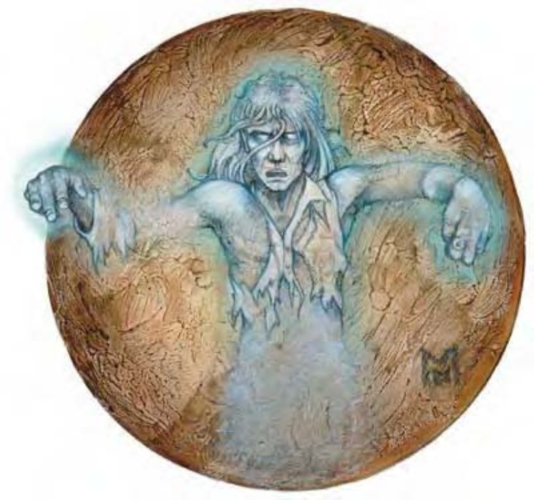

智慧生物死亡之后，由于某种原因无法安息，导致灵魂飘荡遗留在世间，就称为幽魂。
有些幽魂只顾着自己，对其他活物一点兴趣也没有。然而也有些幽魂满怀恶意，憎恨所有生命，誓言要毁灭一切。即使被驱逐或消灭，大多数幽魂还是会一再反复出现，直到他们对人世的羁绊能够解决为止。
幽魂的外型通常和活着的时候一样，但某些会略有不同。部分幽魂看来像天使般和善，也有一些极为扭曲恐怖，散发死亡的怨苦。大多数情况下，幽魂的外型会反映出所属阵营，但也有例外，切勿只以外观来断定。
幽魂的行为举止通常和死前的性格相关。举例来说，贪婪吝啬的人死后形成的幽魂多半会不断聚集财宝，即使这些东西已经没有任何用处。同样地，幽魂通常会徘徊在死去的地点。也就是说，如果贪婪的店铺老板死于某场抢劫，化成的幽魂就可能在店铺中作祟，骚扰新业主和顾客。当然，上述情况并非一成不变的准则，四处游荡的幽魂也不算少数。
幽魂范例这个生物看来像是人类士兵或守卫，穿着笨重的盔甲，手持盾牌。但仔细观察之下，他的整体形象飘忽不定而且还有点透明，显然并非自然界产物。
以下列出以5级人类战士为基底生物的幽魂范例：
| 资料栏位 | 5级人类战士幽魂 中型不死生物 (强力人形生物) (虚体) |
| 生命骰 | 5d12 (32HP) |
| 先攻 | +5 |
| 速度 | 飞行30英尺 (灵活) (6格) |
| 防御等级 | 12 (+1敏捷、+1偏斜)、接触12、措手不及11；或21 (+1敏捷、+8全身铠甲、+2重型盾)、接触11、措手不及20 |
| 基本攻击/擒抱 | +5 / +8 |
| 攻击 | 虚体接触+6近战、攻击灵体生物时+8 (1d6或攻击灵体生物时1d6+3)；或精制重剑+10近战 (1d10+3 / 19-20)；或精制短弓+7远程 (1d6 / ×3) |
| 全力攻击 | 虚体接触+6近战、攻击灵体生物时+8 (1d6或攻击灵体生物时1d6+3)；或精制重剑+10近战 (1d10+3 / 19-20)；或精制短弓+7远程 (1d6 / ×3) |
| 占据/触及 | 5英尺 / 5英尺 |
| 特殊攻击 | 恶腐之触、怨灵附身、灵形幻影 |
| 特殊能力 | 黑暗视觉60英尺、虚体特性、返魂、+4驱散抗力、不死特性 |
| 豁免 | 强韧+4、反射+2、意志+2 |
| 属性 | 力量16、敏捷13、体质―、智力10、感知12、魅力12 |
| 技能 | 攀爬+1、躲藏-1、聆听+11、骑术+9、搜索+8、侦察+11 |
| 专长 | 盲战、顺势斩、擅长奇特武器 (重剑)、精通先攻、猛力攻击、专攻武器 (重剑) |
| 环境 | 温带平原 |
| 组织 | 单独、成队 (2-4) 或聚众 (6-15) |
| 挑战级数 | 7 |
| 宝藏 | 无 |
| 阵营 | 任何 |
| 等级修正值 | +5 |
对抗此幽魂“怨灵附身”的意志检定难度等级为16。
创造幽魂幽魂是一种后天模板，可以套用在任何魅力值6以上的异怪、动物、龙类、巨人、人形生物、魔法兽、人形怪物或植物上 (被套用的生物称为基底生物)。
除了以下所述，幽魂所有数据和特殊能力都比照基底生物。
体型及种类：体型不变。生物类别变为不死生物。但基本攻击加值、豁免检定加值或技能点数都不需重新计算，并获得虚体亚种特性。
生命骰：既有及新获得的生命骰一律改为d12。
速度：成为幽魂之后飞行速度30英尺，机动性灵活，若基底生物原本就有飞行速度，取较高者。
防御等级：天生防御与基底生物相同，但只能用于抵挡灵体生物的攻击。当幽魂使用“灵形幻影”能力时 (详见如下述)，天生防御加值+0，但具有与魅力调整值相同的偏斜加值 (最少+1)。
攻击：幽魂保有基底生物所有攻击方式，然而，若该攻击必须接触到对手实体才能发挥作用，则只对灵体生物有效。
全力攻击：幽魂保有基底生物所有攻击方式，然而，若该攻击必须接触到对手实体才能发挥作用，则只对灵体生物有效。
伤害：攻击灵体生物时，幽魂可造成的伤害与基底生物相同。攻击非灵体生物时，幽魂通常无法造成物理伤害，但使用“灵形幻影”之后就可进行特殊攻击 (如果有的话)。
特殊攻击：幽魂保有基底生物所有特殊攻击，然而，若该攻击必须接触到对手实体才能发挥作用，则只对灵体生物有效。除此之外，幽魂还获得“灵形幻影”能力，再加上下列一到三种特殊攻击。除非特别注明，对抗特殊攻击的豁免检定难度等级=10+幽魂生命骰的一半+幽魂的魅力调整值。
恶腐凝视 (超自然)：幽魂的怨毒目光能够对范围30英尺内的活物造成伤害，受害者必须通过强韧检定，否则就会受到2d10点伤害和1d4点魅力伤害。
恶腐之触 (超自然)：幽魂的虚体接触命中活物时，会造成1d6点伤害。攻击灵体生物时，攻击检定和伤害掷骰时具有力量加值。对抗非灵体生物时，只能在攻击检定上获得敏捷加值。
吸取之触 (超自然)：幽魂的虚体接触命中活物时，可以指定任一项属性值吸取1d4点。每次攻击成功，幽魂可以治疗本身5点伤害。攻击灵体生物时，攻击检定能够获得力量调整值。对抗非灵体生物时，攻击检定时具有敏捷调整值。
丧胆悲啼 (超自然)：花费一个标准动作的时间，幽魂可以发出令人闻之丧胆的悲啼声，30英尺扩散范围内的活物必须通过意志检定，否则会陷入慌乱2d4轮。此能力属于影响心灵的死灵恐惧音波效果。通过豁免检定的生物在24小时内不会再受到同一个幽魂的悲啼影响。
狰狞面容 (超自然)：60英尺范围内，能够看见幽魂的活物都必须通过强韧检定，否则会受到1d4点力量伤害、1d4点敏捷伤害和1d4点体质伤害。通过豁免检定的生物在24小时内不会再受到同一个幽魂的狰狞面容影响。
怨灵附身 (超自然)：每轮一次，灵体幽魂可以尝试附身在物质界的生物身上。此能力与“魔魂壶”法术效果相似 (施法者等级等于幽魂的生命骰，最少10)，但不需要接收灵魂的物品。使用此能力前，幽魂必须先使用“灵形幻影”，并尝试进入受害者所占用的空间，此动作不会引发借机攻击。受害者可以进行“意志”检定 (DC=15+幽魂的魅力调整值) 以抵抗附身。通过豁免检定的生物在24小时内不会再被同一个幽魂附身，也不能再进入该生物所占用的空间。若失败，则幽魂消失，和宿主合为一体。
灵形幻影 (超自然)：每个幽魂都具有此能力。一般而言，幽魂处于灵界，因此就如同灵体生物一样，不能和物质界的东西互动。然而一旦使用“灵形幻影”，幽魂的一部分就进入物质界，仍属于虚体但可以看得见。使用“灵形幻影”后的幽魂只能被其他虚体生物、魔法武器或法术所伤害。遭实体来源的攻击命中时，有50%机率不受伤害。它也可以任意穿越所有固体，因此，幽魂的攻击可以直接穿透盔甲。移动时也不会发出任何声音。
使用“灵形幻影”之后的幽魂可以进行接触攻击或持用幽冥武器攻击 (详见以下关于幽魂装备的说明)。幽魂的一部分仍然留在灵界，在那儿则并非虚体，换句话说，一旦使用“灵形幻影”，幽魂可能会遭受来自灵界和物质界两方面的攻击。对物质界的敌人来说，幽魂具有虚体特性的优势，但灵界的敌人则可以正常攻击之。
若幽魂具有施法能力，处于灵界时，它施展的法术只对灵体生物有效，不能影响物质界的目标。使用“灵形幻影”之后，法术可以同时影响灵体生物和物质界两方面。但接触法术例外，这法术无论如何都不能影响非灵体生物。
幽魂同时属于两个界域，物质界和灵界。因此，身处这两个界域时，都不视为外界生物。
心灵遥控 (超自然)：幽魂具有心灵遥控能力，此为标准动作 (施法者等级等于幽魂的生命骰，最少12)。每次使用过后必须等待1d4轮才能再次使用。
特殊能力：幽魂保有基底生物所有特殊能力。除此之外，幽魂还会获得下列特殊能力。
返魂 (超自然)：大多数情况下，光靠战斗并不能彻底消灭幽魂。这些被“杀死”的幽魂会在2d4天之后再次返魂。即使最强大的法术也很难永久消灭他们，只要通过DC=16的等级检定 (1d20+幽魂的生命骰)，死亡的幽魂就可以回到原处继续作祟。换句话说，要永久消灭幽魂的唯一法门是发掘它为何无法安息而化为幽魂的原因，并设法解决。每个幽魂对人世的羁绊都各不相同，要找出来可得花上好一番功夫。
驱散抗力 (特异)：幽魂具有+4驱散抗力。
属性：与基底生物相同，但幽魂没有体质值，魅力值具有+4加值。
技能：幽魂在进行“躲藏”、“聆听”、“搜索”和“侦察”检定时具有+8种族加值。除此之外与基底生物相同。
环境：任何，通常与基底生物相同。
组织：单独、成队 (2-4) 或聚众 (7-12)。
挑战级数：等于基底生物挑战级数+2。
宝藏：无。
阵营：任何。
等级修正值：基底生物的等级修正值+5。
成为幽魂时，生物携带的所有装备和物品也随之一起转化灵体。除此之外，幽魂还可以保有2d4件生前最珍视的物品 (并非其他生物所拥有的)。这些装备在灵界中可以正常作用，但却会直接穿过物质界的物品或生物，不发生任何效果。然而，若武器具有+1以上的魔法增强加值，在幽魂使用“灵形幻影”之后，就可以对物质界的生物造成伤害，除非同时也是幽冥武器，否则每次攻击有50%失手机率 (就如同以魔法武器攻击幽魂的失手机率一样)。
这些装备的物质本体仍留在原处，就像幽魂的遗体一般。如果别的生物拿走装备本体，灵界的复本也会随之消失。因此，失去这些装备通常会引起幽魂强烈的愤怒，不计一切代价也要让物品回归原处。